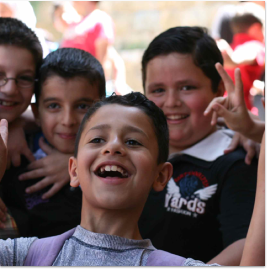

Notre fonctionnement


Yalla ! est dirigée par un Bureau composé de quatre membres, qui rendent compte des actions de Yalla ! aux adhérents de l’association à travers des rapports d’activités concernant chaque projet et lors des Assemblées générales tenues une fois par an à Paris.
Les bénévoles de Yalla ! à Paris et sur le terrain ont préalablement adopté les valeurs de l’association et agissent conformément à ses principes. Ils rapportent leurs activités de façon régulière au Bureau qui contrôle la conformité des actions développées sur le terrain à la mission et aux valeurs que s’est données Yalla !..
La tenue des comptes de l’association et celles des structures créées sur le terrain est assurée par un comptable qui effectue un rapport financier à la fin de chaque projet et de chaque exercice comptable.

Notre stratégie
Intégration des bénéficiaires et de la communauté d’accueil à tous les stades de développement du projet, afin de garantir une compréhension mutuelle des enjeux et objectifs du projet, et contribuer au succès de la mission
Respect de la coordination de l’aide humanitaire menée par les agences humanitaires des Nations Unies, afin de s’intégrer dans une action globale et parvenir ensemble à plus d’efficacité pour répondre aux besoins les plus prégnants
Création d’un lien dynamique entre les donateurs et les bénéficiaires afin de créer une solidarité de proximité et garantir une visibilité sur la destination et l’impact des dons quels que soient leurs montants, tout en faisant parvenir aux bénéficiaires un message de soutien concret de la part de la société civile solidaire
Nos actions

Création de centres d’éducation informelle de qualité à destination d’enfants syriens réfugiés
Plaidoyer auprès des autorités libanaises locales et gouvernementales pour l’intégration des enfants syriens au sein du système scolaire libanais, après remise à niveau par Yalla !
Organisation d’activités sportives et artistiques à destination d’enfants libanais et syriens dans le cadre du dialogue intercommunautaire porté par Yalla!